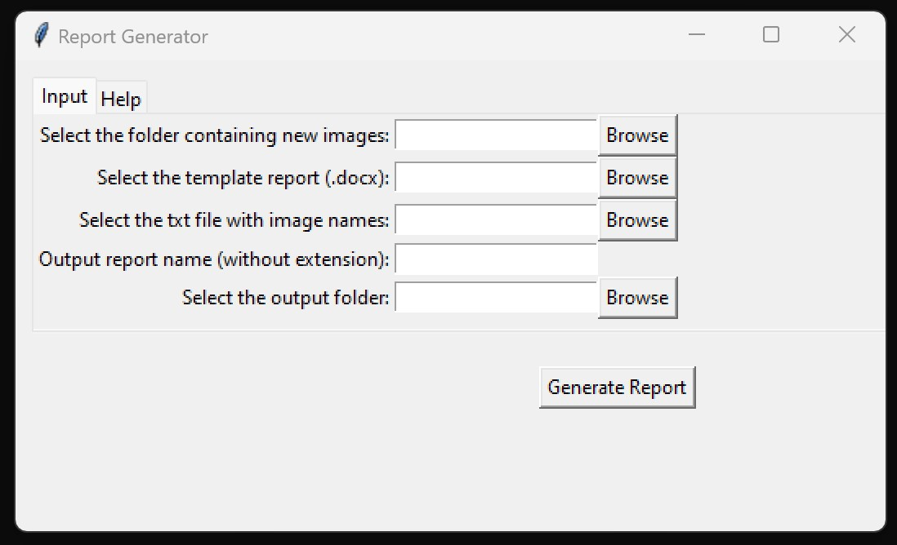
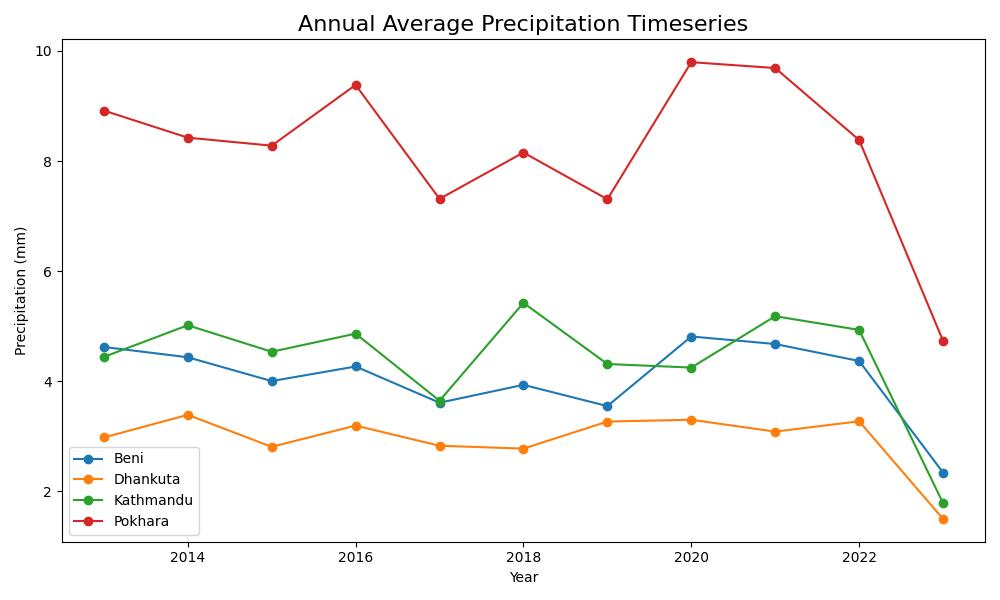

<!DOCTYPE html>
<html lang="en">

<head>
  <meta charset="utf-8">
  <meta content="width=device-width, initial-scale=1.0" name="viewport">

  <title>Pratyush Dhungana</title>
  <meta content="" name="description">
  <meta content="" name="keywords">

  <!-- Favicons -->
  <link href="assets/img/favicon.png" rel="icon">
  <link href="assets/img/apple-touch-icon.png" rel="apple-touch-icon">

  <!-- Google Fonts -->
  <link href="https://fonts.googleapis.com/css?family=Open+Sans:300,300i,400,400i,600,600i,700,700i|Raleway:300,300i,400,400i,500,500i,600,600i,700,700i|Poppins:300,300i,400,400i,500,500i,600,600i,700,700i" rel="stylesheet">

  <!-- Vendor CSS Files -->
  <link href="assets/vendor/aos/aos.css" rel="stylesheet">
  <link href="assets/vendor/bootstrap/css/bootstrap.min.css" rel="stylesheet">
  <link href="assets/vendor/bootstrap-icons/bootstrap-icons.css" rel="stylesheet">
  <link href="assets/vendor/boxicons/css/boxicons.min.css" rel="stylesheet">
  <link href="assets/vendor/glightbox/css/glightbox.min.css" rel="stylesheet">
  <link href="assets/vendor/swiper/swiper-bundle.min.css" rel="stylesheet">

  <!-- Template Main CSS File -->
  <link href="assets/css/style.css" rel="stylesheet">

  <!-- =======================================================
  * Template Name: MyResume
  * Updated: Mar 10 2023 with Bootstrap v5.2.3
  * Template URL: https://bootstrapmade.com/free-html-bootstrap-template-my-resume/
  * Author: BootstrapMade.com
  * License: https://bootstrapmade.com/license/
  ======================================================== -->
</head>

<body>

  <!-- ======= Mobile nav toggle button ======= -->
  <!-- <button type="button" class="mobile-nav-toggle d-xl-none"><i class="bi bi-list mobile-nav-toggle"></i></button> -->
  <i class="bi bi-list mobile-nav-toggle d-lg-none"></i>
  <!-- ======= Header ======= -->
  <header id="header" class="d-flex flex-column justify-content-center">

    <nav id="navbar" class="navbar nav-menu">
      <ul>
        <li><a href="#hero" class="nav-link scrollto active"><i class="bx bx-home"></i> <span>Home</span></a></li>
        <li><a href="#about" class="nav-link scrollto"><i class="bx bx-user"></i> <span>About</span></a></li>
        <li><a href="#resume" class="nav-link scrollto"><i class="bx bx-file-blank"></i> <span>Resume</span></a></li>
       
        <li><a href="#portfolio" class="nav-link scrollto"><i class="bx bx-book-content"></i> <span>Portfolio</span></a></li>
		<!--
        <li><a href="#services" class="nav-link scrollto"><i class="bx bx-server"></i> <span>Services</span></a></li>
        -->
        <li><a href="#contact" class="nav-link scrollto"><i class="bx bx-envelope"></i> <span>Contact</span></a></li>
      </ul>
    </nav><!-- .nav-menu -->

  </header><!-- End Header -->

  <!-- ======= Hero Section ======= -->
  <section id="hero" class="d-flex flex-column justify-content-center">
    <div class="container" data-aos="zoom-in" data-aos-delay="100">
      <h1>Pratyush Dhungana</h1>
      <p>I'm <span class="typed" data-typed-items="Forest Biometrician, GIS Practictioner, Machine Learning Enthusiast "></span></p>
      <div class="social-links">
        <!--<a href="#" class="twitter"><i class="bx bxl-twitter"></i></a>
        <a href="#" class="facebook"><i class="bx bxl-facebook"></i></a>
        <a href="#" class="instagram"><i class="bx bxl-instagram"></i></a>
        <a href="#" class="google-plus"><i class="bx bxl-skype"></i></a>
        -->
        <a href="https://www.linkedin.com/in/pratyush-dhungana-243129175/" class="linkedin" target="_blank"><i class="bx bxl-linkedin"></i></a>
        <a href="https://www.youtube.com/channel/UCXlcNzCvuppE0k0smFkURFQ" class="youtube" target="_blank"><i class="bx bxl-youtube"></i></a>
		<a href="https://www.instagram.com/photozraphy_/" class="instagram" target="_blank"><i class="bx bxl-instagram"></i></a>
        <a href="https://github.com/pratyush-dh" class="github" target="_blank"><i class="bx bxl-github"></i></a>
      </div>
    </div>
  </section><!-- End Hero -->

  <main id="main">

    <!-- ======= About Section ======= -->
    <section id="about" class="about">
      <div class="container" data-aos="fade-up">

        <div class="section-title">
          <h2>About</h2>
          <p>I am currently pursuing a <strong>Master of Science</strong> degree in <strong>Forest Biometrics</strong> at <a href="https://www.forestry.msstate.edu/" target="_blank">Mississippi State University</a>. My research focuses on the advancement of county-level <strong>forest biomass estimation</strong> through the application of diverse <strong>statistical</strong> methodologies. I possess a robust enthusiasm for forest and spatial data science, as well as ecological research, with a commitment to addressing complex, interdisciplinary challenges.
            <br><hr>
            <p>I am a graduate student in the field of <strong>Forest Biometrics</strong> at the <strong>Department of Forestry</strong>, <strong>Mississippi State University</strong>. As a <strong>Graduate Research Assistant</strong> in the <a href="https://www.statebiometrics.com/home" target="_blank">Forest Biometrics Lab</a>, I have been fortunate to engage in both independent and collaborative research projects.</p>

			<p>My academic journey and practical application have laid a strong foundation in <strong>GIS</strong>, <strong>spatial analysis</strong>, and <strong>statistical modeling</strong>. Proficiency in programming languages such as <strong>R</strong> and <strong>Python</strong> allows me to enhance our collective understanding of forest data and its broader implications.</p>

			<p>My research interests are deeply rooted in the application of this data to environmental and ecological challenges. I am especially focused on how forest biometrics can contribute to <strong>carbon assessment</strong> and address the complexities of <strong>climate change</strong>. My aim is to utilize my skills to positively impact our environment and society.</p>
            <br><hr>
            Whenever time permits, I like to do photography, play soccer, watch movies or edit some videos.</p>
        </div>

        <div class="row">
          <div class="col-lg-4">
            
          </div>
          <div class="col-lg-8 pt-4 pt-lg-0 content">
            <h3>Forest Data Scientist &amp; GIS Practictioner.</h3>
            <p class="fst-italic">
            Looking for collaboration opportunites in the field of Forestry, Spatial Science, Quantitative Ecology &amp; Data Science.
            </p>
            <div class="row">
              <div class="col-lg-6">
                <ul>
                  <!--<li><i class="bi bi-chevron-right"></i> <strong>Birthday:</strong> <span>1 May 1995</span></li> -->
                  <li><i class="bi bi-chevron-right"></i> <strong>Website:</strong> <span><a href = "https://pratyush-dh.github.io/" target = "_blank">pratyush-dh.github.io</a></span></li>
                  <li><i class="bi bi-chevron-right"></i> <strong>Phone:</strong> <span>+1 662 497 0143</span></li>
                  <li><i class="bi bi-chevron-right"></i> <strong>City:</strong> <span>Starkville, MS, USA </span></li>
                </ul>
              </div>
              <div class="col-lg-6">
                <ul>
                  <!--<li><i class="bi bi-chevron-right"></i> <strong>Age:</strong> <span>30</span></li>-->
                  <li><i class="bi bi-chevron-right"></i> <strong>Degree:</strong> <span>M.S. Forest Biometrics </span></li>
                  <li><i class="bi bi-chevron-right"></i> <strong>Email:</strong> <span>dh.prtsh@gmail.com; pd624@msstate.edu </span></li>
                  <li><i class="bi bi-chevron-right"></i> <strong>Availability for work/ collaboration:</strong> <span style="padding: 2px; border-radius: 6px; color: white; background-color: #009933;">Available</span></li>
                </ul>
              </div>
            </div>
            <p>
              If you need some help in forest data science, spatial data analysis or research design, I might be able to help you.
            </p>
          </div>
        </div>
		
		

      </div>
    </section><!-- End About Section -->

   

    <!-- ======= Skills Section ======= -->
    <section id="skills" class="skills section-bg">
      <div class="container" data-aos="fade-up">

        <div class="section-title">
          <h2>Skills</h2>
          <p>I believe learning is a lifelong journey. I have gained strong skills in following topics through work experiences, courseworks, online courses, and personal projects.</p>
        </div>

        <div class="row skills-content">

          <div class="col-lg-6">

            <div class="progress">
              <span class="skill">ArcGIS suit of products <i class="val">90%</i></span>
              <div class="progress-bar-wrap">
                <div class="progress-bar" role="progressbar" aria-valuenow="90" aria-valuemin="0" aria-valuemax="100" style="background-color:#25a18e;"></div>
              </div>
            </div>

            <div class="progress">
              <span class="skill">Python <i class="val">60%</i></span>
              <div class="progress-bar-wrap">
                <div class="progress-bar" role="progressbar" aria-valuenow="60" aria-valuemin="0" aria-valuemax="100" style="background-color:#62d0ad;"></div>
              </div>
            </div>

            <div class="progress">
              <span class="skill">Ecological Research <i class="val">65%</i></span>
              <div class="progress-bar-wrap">
                <div class="progress-bar" role="progressbar" aria-valuenow="65" aria-valuemin="0" aria-valuemax="100" style="background-color:#81e8bc;"></div>
              </div>
            </div>

            <div class="progress">
              <span class="skill"> Adobe Products <i class="val">85%</i></span>
              <div class="progress-bar-wrap">
                <div class="progress-bar" role="progressbar" aria-valuenow="85" aria-valuemin="0" aria-valuemax="100" style="background-color:#81e8bc;"></div>
              </div>
            </div>

          </div>

          <div class="col-lg-6">

            <div class="progress">
              <span class="skill">Remote Sensing <i class="val">95%</i></span>
              <div class="progress-bar-wrap">
                <div class="progress-bar" role="progressbar" aria-valuenow="95" aria-valuemin="0" aria-valuemax="100" style="background-color:#44b99e;"></div>
              </div>
            </div>

            <div class="progress">
              <span class="skill"> R <i class="val">70%</i></span>
              <div class="progress-bar-wrap">
                <div class="progress-bar" role="progressbar" aria-valuenow="70" aria-valuemin="0" aria-valuemax="100" style="background-color:#81e8bc;"></div>
              </div>
            </div> 

            <div class="progress">
              <span class="skill">Video Editing <i class="val">60%</i></span>
              <div class="progress-bar-wrap">
                <div class="progress-bar" role="progressbar" aria-valuenow="60" aria-valuemin="0" aria-valuemax="100" style="background-color:#50d2cd;"></div>
              </div>
            </div>

            <div class="progress">
              <span class="skill">Statistical Analysis <i class="val">80%</i></span>
              <div class="progress-bar-wrap">
                <div class="progress-bar" role="progressbar" aria-valuenow="80" aria-valuemin="0" aria-valuemax="100" style="background-color:#50d2cd;"></div>
              </div>
            </div>

          </div>

        </div>

      </div>
    </section><!-- End Skills Section -->

    <!-- ======= Resume Section ======= -->
    <section id="resume" class="resume">
      <div class="container" data-aos="fade-up">

        <div class="section-title">
          <h2>Resume</h2>
          <p>Forest Data Scientist, GIS Practioner &amp; Ecological Researcher Seeking Collaboration Opportunities.</p>
        </div>

        <div class="row">
          <div class="col-lg-6">
            <h3 class="resume-title">Summary</h3>
            <div class="resume-item pb-0">
              <h4>Pratyush Dhungana</h4>
              <p><em>Dynamic and progress driven forestry graduate, forest and spatial data science enthusiast, interested in use of spatial and non-spatial data for addressing inter-disciplinary problems. Adept in spatial analysis, and ecological research.</em></p>
              <ul>
                <li>Gandaki, Nepal</li>
                <li>dh.prtsh@gmail.com</li>
              </ul>
            </div>

            <h3 class="resume-title">Education</h3>
            <div class="resume-item">
             <h4>M.S. in Forest Biomterics</h4>
              <h5>2024 - Present</h5>
              <p><em>College of Forest Resources, Mississippi State University, Starkville, MS, USA</em></p>
              <h6>Project: <strong>“Machine Learning Approaches to Improve Small Domain Biomass Estimates”</strong></h6>
              <h6>Class Projects:</h6>
              <ul>
                <li>Used standard Fay-Herriot Model to enhance the county level above ground forest biomass estimates for the states of Mississippi and Minnesota. </li>
                <li>Designed a basic geodatabase for the Oktibbeha county of Mississippi.</li>
                <li>Created a tool for selecting the water sources within the given radius from the centre of Mississippi State University.</li> 
			<h4>BS in Forestry</h4>
              <h5>2017 - 2022</h5>
              <p><em>Institute of Forestry, Tribhuvan University, Nepal</em></p>
              <h6>Thesis: <strong>“Night Echoes in Urban Landscape: Activity and Guild of Bats in Different Habitat Types”</strong></h6>
              <h6>Class Projects:</h6>
              <ul>
                <li>Prepared of Community Forest Operation Plan of Sundarban Community Forest, Kapilvastu. </li>
                <li>Performed Watershed Prioritization of Kaligandaki Watershed </li>
                <li>Developed a local volume table of trees present in Institute of Forestry Pokhara.</li>
                <li>Prepared a change detection map of Tandi, Chitwan.</li>
               <!-- <li>Created ArcGIS Pro script tool for splitting geodatabase based on polygons of interest.</li> 
              </ul>
            </div>
            <div class="resume-item">
              <h4>Bachelor in Geomatics Engineering</h4>
              <h5>2013 - 2017</h5>
              <p><em>IOE Pashchimanchal Campus, Tribhuvan University, Pokhara, Nepal</em></p>
              <h6>Thesis: <strong>“Simulation of flood in Pokhara Valley Due to Seti River”</strong></h6>
              <h6>Class Projects:</h6>
              <ul>
                <li>Implemented the Spectral Angle Mapper algorithm in Python. </li>
                <li>Multispectral Satellite image semantic segmentation using neural network. </li>
                <li>Created an interactive web map of recreational places in and around Pokhara City.</li>
                <li>Developed a building foot-print extraction model using Support Vector Machine.</li>
                <li>Analyzed the Spatio-temporal pattern of snow-cover changes in Nepal with cloud-based remote sensing.</li>
                <li>Designed and developed the PostgreSQL database of the student records along with their spatial location information in PostGIS.</li> -->
              </ul>
            </div>
			
			<h3 class="resume-title">Research Experience</h3>
			<div class="resume-item">
             <!-- <h4>BS in Forestry</h4>
              <h5>2017 - 2022</h5>
              <p><em>Institute of Forestry, Tribhuvan University, Nepal</em></p>
              <h6>Thesis: <strong>“Night Echoes in Urban Landscape: Activity and Guild of Bats in Different Habitat Types”</strong></h6>
              <h6>Class Projects:</h6> -->
              <h4> Lead Researcher</h4>
			  <ul><li><a href="https://github.com/pratyush-dh/pratyush-dh.github.io/blob/main/batstudy.html">Night Echoes in Urban Landscape: Activity and Guild of Bats in Different 
					Habitat Types</a> —Hypothesis development, Research Design, Data collection using echometer 
					touch-2 pro, Data Analysis using kaleidoscope, raven pro, SPSS and MS Excel, and Report writing.</li></ul>

				</li> 

				<h4>Researcher</h4> <ul><li> "Bat diversity in the Banpale forest, Pokhara, Nepal during spring season" — Data 
					collection using mist-netting of bats and Analysis.
		 		<a href="https://doi.org/10.11609/jott.6263.13.6.18479-18489">https://doi.org/10.11609/jott.6263.13.6.18479-18489</a></li></ul>
				
				

				<h4>Research Assistant</h4>
					<ul><li>"Exploring the roosting and nesting habitats of Asian Barred Owlet 
					(Glaucidium cuculoides)" in Raghuganga Rural Municipality", —Data 
					collection (Bio-physical data with the help of Vortex, Binoculars, GPS and Diameter 
					Tape) and dissemination.</li>

					<li>"Beneficial or harmful: How do local stakeholders perceive bats and Caves in mid-hills of 
					Nepal?", — Social data collection using household questionnaire survey and open-ended 
					interview.</li>

					<li>"Assessment of Kulekhani watershed's health based on water quality", — Research 
					Design and Data analysis using ArcMap.</li></ul>

				<h4>Research Field Assistant</h4> 
					<ul><li>
					"Bats and Caves: Seasonal Monitoring and Conservation in Kaligandaki Canyon, Nepal", 
					— Field data collection (micro-climatic and acoustic data collection), organized a 
					conservation seminar for cave protection comittee.</li>

					<li>"Acoustic Survey and Monitoring to Lay the Foundation for Conservation of the Endemic 
					Csorba’s Mouse Eared Bat (Myotis csorbai) in Nepal," — Field data collection (microclimatic and acoustic data collection).</li>

					<li>Field Expert: "Bats, trees and humans: Fruit-eating bat survey in Chepang communities of Kalika 
					Municipality, Chitwan", —Acoustic data collection using song-meter for recording of 
					echolocation pulses in 11 different survey stations.</li>
					 
					<li>Field Technician: Preparation of community forest operation plan for 7 community forests; 
					NTFP inventory in Myagdi District: A five-year plan under Division Forest Office, Myagdi.</li> </ul>
		</div>
		
          </div>
          <div class="col-lg-6">
            <h3 class="resume-title">Professional Experience</h3>
            <div class="resume-item">
              <h4>Graduate Research Assisstant</h4>
              <h5>January 2024 - Present</h5>
              <p><em>Forest Biometrics Lab, Department of Forestry, Mississippi State University</em></p>
              <ul>
                <li>Prepared study area maps for two differnt projects.
                <li>Performed high to coarse resolution satellite and optical data acquisition, cleaning and analysis for the small area estimation project.
               <!--  <li>Performed high-resolution satellite image acquisition and land cover classification using ArcGIS. 
				<li>Sensitized more than 200 high school students about the Forest Fire: Causes and Mitigation Measures.
				<li>Applied different nursery improvement techniques, and updated Division and Subdivision office data.
				<li>Explored different caves and conducted acoustic monitoring of Bats.
				<li>Prepared map of several community forests and drafted different official documents, prepared Presentation slides for workshops and seminars. 
				<li>Collected socio-demographic data using household questionnaire survey for different community forest operational plan preparation. 
				<li>Collected NTFP inventory data from high mountains.
				<li>Consulted and organized different local and regional stakeholders of DFO. -->
              </ul>
			  <h4>Research Assisstant</h4>
              <h5>September 2023 - November 2023</h5>
              <p><em>NepAI Applied Mathematics and Informatics Institute for Research</em></p>
             <!--  <ul>
                <li>Prepared study area maps for two differnt projects.
                <li>Performed high to coarse resolution satellite and optical data acquisition, cleaning and analysis for the small area estimation project.
               <!--  <li>Performed high-resolution satellite image acquisition and land cover classification using ArcGIS. 
				<li>Sensitized more than 200 high school students about the Forest Fire: Causes and Mitigation Measures.
				<li>Applied different nursery improvement techniques, and updated Division and Subdivision office data.
				<li>Explored different caves and conducted acoustic monitoring of Bats.
				<li>Prepared map of several community forests and drafted different official documents, prepared Presentation slides for workshops and seminars. 
				<li>Collected socio-demographic data using household questionnaire survey for different community forest operational plan preparation. 
				<li>Collected NTFP inventory data from high mountains.
				<li>Consulted and organized different local and regional stakeholders of DFO.
              </ul> -->
			  <h4>Intern</h4>
              <h5>February 2022-  June 2022</h5>
              <p><em>Division Forest Office, Myagdi</em></p>
              <ul>
                <li>Conducted one month-long active acoustic monitoring of the activity of bats in different habitats of bats using echohmeter.
                <li>Monitored different forest management activities within the community forests of Myagdi district.
                <li>Performed high-resolution satellite image acquisition and land cover classification using ArcGIS. 
				<li>Sensitized more than 200 high school students about the Forest Fire: Causes and Mitigation Measures.
				<li>Applied different nursery improvement techniques, and updated Division and Subdivision office data.
				<li>Explored different caves and conducted acoustic monitoring of Bats.
				<li>Prepared map of several community forests and drafted different official documents, prepared Presentation slides for workshops and seminars. 
				<li>Collected socio-demographic data using household questionnaire survey for different community forest operational plan preparation. 
				<li>Collected NTFP inventory data from high mountains.
				<li>Consulted and organized different local and regional stakeholders of DFO.
              </ul>
            </div>
            <!--
            <div class="resume-item">
              <h4>Graphic design specialist</h4>
              <h5>2017 - 2018</h5>
              <p><em>Stepping Stone Advertising, New York, NY</em></p>
              <ul>
                <li>Developed numerous marketing programs (logos, brochures,infographics, presentations, and advertisements).</li>
                <li>Managed up to 5 projects or tasks at a given time while under pressure</li>
                <li>Recommended and consulted with clients on the most appropriate graphic design</li>
                <li>Created 4+ design presentations and proposals a month for clients and account managers</li>
              </ul>
            </div>
            -->
			 <div class="resume-item">
              <h4>Co-ordinator</h4>
              <h5>May 2021 - May 2022</h5>
              <p><em>Bat Friends Pokhara, IOF</em></p>
              <ul>
                <li>Led a team of 9 people for bat research and monitoring.
                <li>Carried out mist-netting and active acoustic monitoring of Bats.
                <li>Trained Forestry Undergraduates about Bat Handling, Identification along with Caves and Bats Monitoring during 26th National Wildlife Week.
				<li>Performed Acoustic Analysis and Report Writing.
				<li>Organized Various Conservation Outreach Programs.
				<!--<li>Explored different caves and conducted acoustic monitoring of Bats.
				<li>Prepared map of several community forests and drafted different official documents, prepared Presentation slides for workshops and seminars. 
				<li>Collected socio-demographic data using household questionnaire survey for different community forest operational plan preparation. 
				<li>Collected NTFP inventory data from high mountains.
				<li>Consulted and organized different local and regional stakeholders of DFO. --> 
              </ul>
            </div>
           <!-- <div class="resume-item">
              <h3>Machine Learning Projects</h3>
              <ul>
                <li>Developed deep learning models for computer vision applications, including a U-net model for segmentation of street-view images, a multi-task learning neural network for road sign detection, a face verification and recognition system using Siamese Neural Network, and a lightweight model for dog species classification using MobileNetV2.</li>
                <li>Improved the accuracy of existing models for pixel-wise land use classification from the satellite image, bird detection on security camera footage, and movie recommendation systems by using data augmentation, bias-variance analysis, and hyper-parameter tuning.</li>
                <li>Modified and deployed the YOLOv5 model for swimming pool detection on satellite images.</li>
                <li>Built a sentiment detection model with LSTM and a word-level language model with RNN.</li>
                <li>Developed a flood vulnerability map using a random forest classifier on historical flood data, and applied an anomaly detection algorithm to detect failing servers on the network.</li>
                <li>Built a deep reinforcement learning model to train an agent to land a lunar lander safely on a landing pad on the surface of the moon, and a system to recommend video games based on k-mean clustering.</li>
              </ul>
            </div> -->
			
			<div class="resume-item">
			<h4>Training and Certification</h4>
             <!-- <h4>BS in Forestry</h4>
              <h5>2017 - 2022</h5>
              <p><em>Institute of Forestry, Tribhuvan University, Nepal</em></p>
              <h6>Thesis: <strong>“Night Echoes in Urban Landscape: Activity and Guild of Bats in Different Habitat Types”</strong></h6>
              <h6>Class Projects:</h6> -->
              <ul>
                <li>Species Distribution Modeling with Remote Sensing, Webinar by NASA ARSET.</li>
                <li>Satellite Observations and Tools for Fire Risk, Detection, and Analysis, Webinar by NASA ARSET. </li>
				<li>Fundamentals of GIS by UC Davis on Coursera.</li>
                <li>Wildlife Research Techniques Training, 2020 for 19 days by Friends of Nature-FON, Nepal.</li>
                <li>Python Basics by Michigan State University on Coursera.</li>
				<li>Spatial Data Science: The New Frontier in Analytics – A MOOC by ESRI.</li>
				<li>Going Places with Spatial Analysis —A MOOC by ESRI</li>
			</div>
			
        </div>
			
		
    </section><!-- End Resume Section -->

    <!-- ======= Portfolio Section ======= -->
    
    <section id="portfolio" class="portfolio section-bg">
      <div class="container" data-aos="fade-up">
 
        <div class="section-title">
          <h2>Portfolio</h2>
          <p>I have mostly worked in GIS and Remote Sensing, Web Development and Machine Learning.
		  Though I am not allowed to share the work I have done for my organizations, here are some works I have done either for my personal projects.</p>
        </div>

        <div class="row">
          <div class="col-lg-12 d-flex justify-content-center" data-aos="fade-up" data-aos-delay="100">
            <ul id="portfolio-flters">
              <li data-filter="*" class="filter-active">All</li>
              <li data-filter=".filter-app">Development</li>
              <li data-filter=".filter-card">Remote Sensing and GIS</li>
              <li data-filter=".filter-web">Machine learning</li>
            </ul>
          </div>
        </div>

        <div class="row portfolio-container" data-aos="fade-up" data-aos-delay="200">

          <div class="col-lg-4 col-md-6 portfolio-item filter-web">
            <div class="portfolio-wrap">
              
              <div class="portfolio-info">
                <h4>Potato Disease Identification</h4>
                <p>Details</p>
                <div class="portfolio-links">
                  <a href="assets/img/portfolio/potatodisease2.jpg" data-gallery="portfolioGallery" class="portfolio-lightbox" title="Web App interface for potato diesease classification/Identification"><i class="bx bx-plus"></i></a>
                  <a href="potatoDetails.html" class="portfolio-details-lightbox" data-glightbox="type: external" title="Portfolio Details"><i class="bx bx-link"></i></a>
                </div>
              </div>
            </div>
          </div>

          <div class="col-lg-4 col-md-6 portfolio-item filter-web">
            <div class="portfolio-wrap">
              
              <div class="portfolio-info">
                <h4>Satellite Image classification using Python</h4>
                <p>Details</p>
                <div class="portfolio-links">
                  <a href="assets/img/portfolio/lulc1.jpg" data-gallery="portfolioGallery" class="portfolio-lightbox" title="Classified Land cover Types"><i class="bx bx-plus"></i></a>
                  <a href="lulcDetails.html" class="portfolio-details-lightbox" data-glightbox="type: external" title="Portfolio Details"><i class="bx bx-link"></i></a>
                </div>
              </div>
            </div>
          </div>

          <div class="col-lg-4 col-md-6 portfolio-item filter-web">
            <div class="portfolio-wrap">
              
              <div class="portfolio-info">
                <h4>Swimmming Pool Detection Using YOLOv5</h4>
                <p>Details</p>
                <div class="portfolio-links">
                  <a href="assets/img/portfolio/swimmingpool3.jpg" data-gallery="portfolioGallery" class="portfolio-lightbox" title="Swimming Pool Detection on Satellite Images using ArcMap and YOLOv5"><i class="bx bx-plus"></i></a>
                  <a href="swimmingpoolDetails.html" class="portfolio-details-lightbox" data-glightbox="type: external" title="Portfolio Details"><i class="bx bx-link"></i></a>
                </div>
              </div>
            </div>
          </div>
		  
		  <div class="col-lg-4 col-md-6 portfolio-item filter-card">
            <div class="portfolio-wrap">
              
              <div class="portfolio-info">
                <h4>Myagdi Topographic Map</h4>
                <p>Details</p>
                <div class="portfolio-links">
                  <a href="assets/img/portfolio/myagdi1.jpg" data-gallery="portfolioGallery" class="portfolio-lightbox" title="Topographic Map of Myagdi, Nepal with different tourist area and stream networks."><i class="bx bx-plus"></i></a>
                  <a href="topomapDetails.html" class="portfolio-details-lightbox" data-glightbox="type: external" title="Portfolio Details"><i class="bx bx-link"></i></a>
                </div>
              </div>
            </div>
          </div>

          <div class="col-lg-4 col-md-6 portfolio-item filter-card">
            <div class="portfolio-wrap">
              
              <div class="portfolio-info">
                <h4>DEM to Stream Network Tool</h4>
                <p>Details</p>
                <div class="portfolio-links">
                  <a href="assets/img/portfolio/model1.jpg" data-gallery="portfolioGallery" class="portfolio-lightbox" title="Input DEM and Output Stream Network"><i class="bx bx-plus"></i></a>
                  <a href="modelDetails.html" class="portfolio-details-lightbox" data-glightbox="type: external" title="Portfolio Details"><i class="bx bx-link"></i></a>
                </div>
              </div>
            </div>
          </div>

          <div class="col-lg-4 col-md-6 portfolio-item filter-web">
            <div class="portfolio-wrap">
              
              <div class="portfolio-info">
                <h4>Real-Time Multi-Class Object classification</h4>
                <p>Details</p>
                <div class="portfolio-links">
                  <a href="assets/img/portfolio/classifier3.jpg" data-gallery="portfolioGallery" class="portfolio-lightbox" title="Model in Action"><i class="bx bx-plus"></i></a>
                  <a href="classifierDetails.html" class="portfolio-details-lightbox" data-glightbox="type: external" title="Portfolio Details"><i class="bx bx-link"></i></a>
                </div>
              </div>
            </div>
          </div>

          <div class="col-lg-4 col-md-6 portfolio-item filter-card">
            <div class="portfolio-wrap">
              
              <div class="portfolio-info">
                <h4>Airports and Flight Routes</h4>
                <p>Details</p>
                <div class="portfolio-links">
                  <a href="assets/img/portfolio/airport3.jpg" data-gallery="portfolioGallery" class="portfolio-lightbox" title="Airports and Flight routes in Nepal"><i class="bx bx-plus"></i></a>
                  <a href="airportDetails.html" class="portfolio-details-lightbox" data-glightbox="type: external" title="Portfolio Details"><i class="bx bx-link"></i></a>
                </div>
              </div>
            </div>
          </div>
		  
		  <div class="col-lg-4 col-md-6 portfolio-item filter-card">
            <div class="portfolio-wrap">
              
              <div class="portfolio-info">
                <h4>Major Lakes of Nepal</h4>
                <p>Details</p>
                <div class="portfolio-links">
                  <a href="assets/img/portfolio/lake4.jpg" data-gallery="portfolioGallery" class="portfolio-lightbox" title="Major Lakes and Ponds in Nepal"><i class="bx bx-plus"></i></a>
                  <a href="lakesDetails.html" class="portfolio-details-lightbox" data-glightbox="type: external" title="Portfolio Details"><i class="bx bx-link"></i></a>
                </div>
              </div>
            </div>
          </div>

          

          <div class="col-lg-4 col-md-6 portfolio-item filter-app">
            <div class="portfolio-wrap">
              
              <div class="portfolio-info">
                <h4>Geo Quiz</h4>
                <p>Details</p>
                <div class="portfolio-links">
                  <a href="assets/img/portfolio/geoquiz1.jpg" data-gallery="portfolioGallery" class="portfolio-lightbox" title="Geo Quiz App interface"><i class="bx bx-plus"></i></a>
                  <a href="geoquizDetails.html" class="portfolio-details-lightbox" data-glightbox="type: external" title="Portfolio Details"><i class="bx bx-link"></i></a>
                </div>
              </div>
            </div>
          </div>

          <div class="col-lg-4 col-md-6 portfolio-item filter-app">
            <div class="portfolio-wrap">
              
              <div class="portfolio-info">
                <h4>Happiness Index</h4>
                <p>Details</p>
                <div class="portfolio-links">
                  <a href="assets/img/portfolio/happy1.jpg" data-gallery="portfolioGallery" class="portfolio-lightbox" title="Happiness Index of a country and its rank in a given year."><i class="bx bx-plus"></i></a>
                  <a href="happinessDetails.html" class="portfolio-details-lightbox" data-glightbox="type: external" title="Portfolio Details"><i class="bx bx-link"></i></a>
                </div>
              </div>
            </div>
          </div>
		  
		  <div class="col-lg-4 col-md-6 portfolio-item filter-app">
            <div class="portfolio-wrap">
              
              <div class="portfolio-info">
                <h4>Report Automation (Image Replace)</h4>
                <p>Details</p>
                <div class="portfolio-links">
                  <a href="assets/img/portfolio/reportAutomation1.jpg" data-gallery="portfolioGallery" class="portfolio-lightbox" title="Model in Action"><i class="bx bx-plus"></i></a>
                  <a href="reportAutomationDetails.html" class="portfolio-details-lightbox" data-glightbox="type: external" title="Portfolio Details"><i class="bx bx-link"></i></a>
                </div>
              </div>
            </div>
          </div>
		  
		  <div class="col-lg-4 col-md-6 portfolio-item filter-app">
            <div class="portfolio-wrap">
              
              <div class="portfolio-info">
                <h4>Animation(Precipitation)</h4>
                <p>Details</p>
                <div class="portfolio-links">
                  <a href="assets/img/portfolio/animation3.jpg" data-gallery="portfolioGallery" class="portfolio-lightbox" title="Model in Action"><i class="bx bx-plus"></i></a>
                  <a href="animationDetails.html" class="portfolio-details-lightbox" data-glightbox="type: external" title="Portfolio Details"><i class="bx bx-link"></i></a>
                </div>
              </div>
            </div>
          </div>

        </div>

      </div>
    </section>

  <!-- End Portfolio Section -->

  
	

    <!-- ======= Contact Section ======= -->
    <section id="contact" class="contact">
	
      <div class="container" data-aos="fade-up">

        <div class="section-title">
          <h2>Contact</h2>
        </div>

        <div class="row mt-1">
		
          <div class="col-lg-4">
            <div class="info">
              <div class="address">
                <i class="bi bi-geo-alt"></i>
                <h4>Location:</h4>
                <p>Starkville, MS, USA </p>
              </div>

              <div class="email">
                <i class="bi bi-envelope"></i>
                <h4>Email:</h4>
                <p>dh.prtsh@gmail.com; pd624@msstate.edu</p>
              </div>
            <!--
              <div class="phone">
                <i class="bi bi-phone"></i>
                <h4>Call:</h4>
                <p>+1 5589 55488 55s</p>
              </div>
            -->
			
            </div>

          </div>

          <div class="col-lg-8 mt-5 mt-lg-0">
		  <div class="container" id="ff-compose" style="position: relative; top: -50px;"></div>
		  <script async defer src="https://formfacade.com/include/106785940645725770604/form/1FAIpQLSeANgswt5-2mpTeweiKyVaF7KYVJ7Ed2FqzaaMAJrftX2sTMQ/bootstrap.js?div=ff-compose"></script>

			<!--
			<form action="forms/contact.php" method="post" role="form" class="php-email-form">
              <div class="row">
                <div class="col-md-6 form-group">
                  <input type="text" name="name" class="form-control" id="name" placeholder="Your Name" required>
                </div>
                <div class="col-md-6 form-group mt-3 mt-md-0">
                  <input type="email" class="form-control" name="email" id="email" placeholder="Your Email" required>
                </div>
              </div>
              <div class="form-group mt-3">
                <input type="text" class="form-control" name="subject" id="subject" placeholder="Subject" required>
              </div>
              <div class="form-group mt-3">
                <textarea class="form-control" name="message" rows="5" placeholder="Message" required></textarea>
              </div>
              <div class="my-3">
                <div class="loading">Loading</div>
                <div class="error-message"></div>
                <div class="sent-message">Your message has been sent. Thank you!</div>
              </div>
              <div class="text-center"><button type="submit">Send Message</button></div>
            </form>
			-->

          </div>

        </div>

      </div>
    </section><!-- End Contact Section -->

  </main><!-- End #main -->

  <!-- ======= Footer ======= -->
  <footer id="footer">
    <div class="container">
      <h3>Pratyush Dhungana</h3>
      <p>Seek Progress not Perfection.</p>
      <div class="social-links">
        <!-- <a href="#" class="twitter"><i class="bx bxl-twitter"></i></a>
        <a href="#" class="facebook"><i class="bx bxl-facebook"></i></a>
        <a href="#" class="instagram"><i class="bx bxl-instagram"></i></a>
        <a href="#" class="google-plus"><i class="bx bxl-skype"></i></a>
        -->
        <a href="https://www.linkedin.com/in/pratyush-dhungana-243129175/" class="linkedin" target="_blank"><i class="bx bxl-linkedin"></i></a>
        <a href="https://www.youtube.com/channel/UCXlcNzCvuppE0k0smFkURFQ" class="youtube" target="_blank"><i class="bx bxl-youtube"></i></a>
		<a href="https://www.instagram.com/photoshant_/" class="instagram" target="_blank"><i class="bx bxl-instagram"></i></a>
        <a href="https://github.com/pratyush-dh" class="github" target="_blank"><i class="bx bxl-github"></i></a>

      </div>
      <div class="copyright">
        &copy; Copyright <strong><span>MyResume</span></strong>. All Rights Reserved
      </div>
      <div class="credits">
        <!-- All the links in the footer should remain intact. -->
        <!-- You can delete the links only if you purchased the pro version. -->
        <!-- Licensing information: [license-url] -->
        <!-- Purchase the pro version with working PHP/AJAX contact form: https://bootstrapmade.com/free-html-bootstrap-template-my-resume/ -->
        Designed by <a href="https://bootstrapmade.com/">BootstrapMade</a>
      </div>
    </div>
  </footer><!-- End Footer -->

  <div id="preloader"></div>
  <a href="#" class="back-to-top d-flex align-items-center justify-content-center"><i class="bi bi-arrow-up-short"></i></a>

  <!-- Vendor JS Files -->
  <script src="assets/vendor/purecounter/purecounter_vanilla.js"></script>
  <script src="assets/vendor/aos/aos.js"></script>
  <script src="assets/vendor/bootstrap/js/bootstrap.bundle.min.js"></script>
  <script src="assets/vendor/glightbox/js/glightbox.min.js"></script>
  <script src="assets/vendor/isotope-layout/isotope.pkgd.min.js"></script>
  <script src="assets/vendor/swiper/swiper-bundle.min.js"></script>
  <script src="assets/vendor/typed.js/typed.min.js"></script>
  <script src="assets/vendor/waypoints/noframework.waypoints.js"></script>
  <script src="assets/vendor/php-email-form/validate.js"></script>

  <!-- Template Main JS File -->
  <script src="assets/js/main.js"></script>

</body>

</html>
